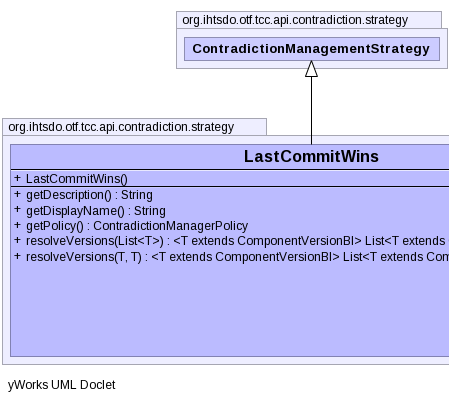

public class LastCommitWins extends ContradictionManagementStrategy implements Serializable
|  |
ec, vc| Constructor and Description |
|---|
LastCommitWins() |
| Modifier and Type | Method and Description |
|---|---|
String |
getDescription()
Method to get a description of this conflict resolution strategy.
|
String |
getDisplayName()
Method to get the display name of this conflict resolution strategy.
|
ContradictionManagerPolicy |
getPolicy() |
<T extends ComponentVersionBI> |
resolveVersions(List<T> tuples)
Resolves the supplied versions, which may be from more than one entity,
to a conflict resolved latest state.
|
<T extends ComponentVersionBI> |
resolveVersions(T part1,
T part2)
Resolves the supplied parts to a conflict resolved latest state.
|
equals, getEditCoordinate, getViewCoordinate, hashCode, setEditCoordinate, setViewCoordinate, toStringpublic String getDescription()
ContradictionManagerBIgetDescription in interface ContradictionManagerBIpublic String getDisplayName()
ContradictionManagerBIgetDisplayName in interface ContradictionManagerBIpublic <T extends ComponentVersionBI> List<T> resolveVersions(List<T> tuples)
ContradictionManagerBIBest case this will resolve to one tuple, however this will depend upon the data and the resolution strategy in use.
Note that the input list of tuples will not be modified by this method.
resolveVersions in interface ContradictionManagerBIpublic <T extends ComponentVersionBI> List<T> resolveVersions(T part1, T part2)
ContradictionManagerBIBest case this will resolve to one part, however this will depend upon the data and the resolution strategy in use.
Note that the input list of parts will not be modified by this method.
NB This method requires that all the parts are from the same entity! If they are not there is no way for this method to determine that and resolution will take place assuming they are all from the same entity.
resolveVersions in interface ContradictionManagerBIpublic ContradictionManagerPolicy getPolicy()
getPolicy in interface ContradictionManagerBICopyright © 2014 International Health Terminology Standards Development Organisation. All rights reserved.